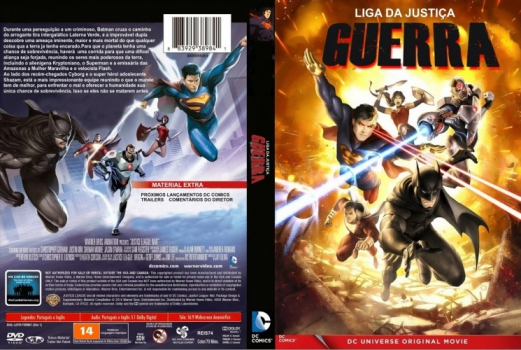

Outro Título:Justice League: War
País:United States, 79 minutos
Idiomas falados:Inglês, Português
Gênero(s):Animação, Ação
Diretor(s):Jay Oliva
Escritor(es):Heath Corson
Codec:MPEG-2 (DVD)
Número: 5791


Certificado:12
Sinopse:
Uma misteriosa figura espreita nas sombras de Gotham City, um guardião silencioso conhecido apenas como o Batman. Enquanto combate o crime e ganha cada vez mais a desconfiança do público, ele enfrenta as injustiças da noite sozinho. Durante uma perseguição a um criminoso, Batman cruza o caminho do arrogante tira intergaláctico, o Lanterna Verde, e a improvável dupla descobre uma ameaça iminente, maior e mais mortal do que qualquer coisa que Terra já tenha encarado.
Elenco:


Tipo de mídia: DVD5,
Legendas: Inglês, Português, Sem Legendas
Alugado: Não
Tela: Anamorphic Widescreen